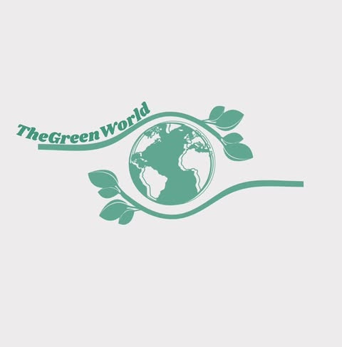
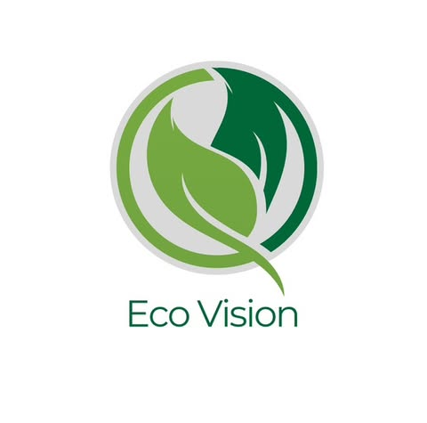
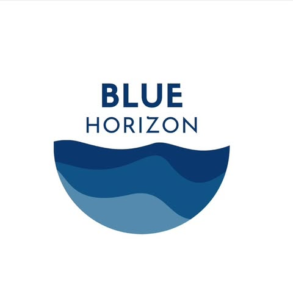

Вярваме, че истинската промяна се случва, когато работим заедно. Именно затова се обграждаме с вдъхновяващи организации, които споделят нашите ценности и стремеж към устойчиво бъдеще. Нашите партньори са екологични и социални инициативи от различни държави, които работят в сфери като опазване на природата, екологично образование, устойчиви градски решения и активизъм. Чрез сътрудничество, споделяне на знания и съвместни проекти, ние заедно създаваме по-зелена, по-чиста и по-социално отговорна среда. Разгледайте нашите партньорски организации и открийте кои са те и как допринасят за общата ни мисия!
The Green World е екологична организация, която обединява активисти, младежи и общности от различни държави с общата цел да насърчават устойчиви практики и екологично образование. С дейности, развиващи се в Румъния, организацията реализира проекти, свързани с опазване на природата, намаляване на отпадъците и възстановяване на екосистемите. Сред основните им инициативи са кампании за залесяване, работилници за екологично образование, програми за намаляване на въглеродния отпечатък и кръгова икономика, както и партньорства с местни и международни организации, които споделят същите ценности.
EcoVision е екологична организация, която работи в Полша, с фокус върху устойчивото развитие, екологичното образование и социалните иновации. Техните инициативи са насочени към промяна на начина, по който хората взаимодействат с околната среда – от практики за нулеви отпадъци до зелени градски решения и възобновяеми енергийни източници. Със силен акцент върху образованието и младежкото участие, EcoVision организира обучения, екологични работилници и кампании, насочени към повишаване на осведомеността за климатичните предизвикателства. Чрез сътрудничество с неправителствени организации, бизнеси и общности, те разработват иновативни екологични решения и подкрепят местни инициативи за зелена трансформация.
Blue Horizon е българска екологична организация, посветена на опазването на морските и крайбрежните екосистеми. Работейки основно по Черноморското крайбрежие, те се фокусират върху защитата на морската фауна, намаляването на замърсяването с пластмаси и насърчаването на устойчив туризъм. Сред основните им дейности са почиствания на плажове, мониторинг на морската екосистема, образователни кампании за опазване на водните ресурси и проекти за възстановяване на крайбрежната природа. Организацията си сътрудничи с местни общности, училища и доброволци, за да вдъхновява активна гражданска ангажираност и по-устойчив начин на живот.
